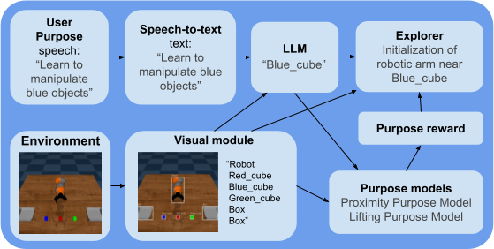
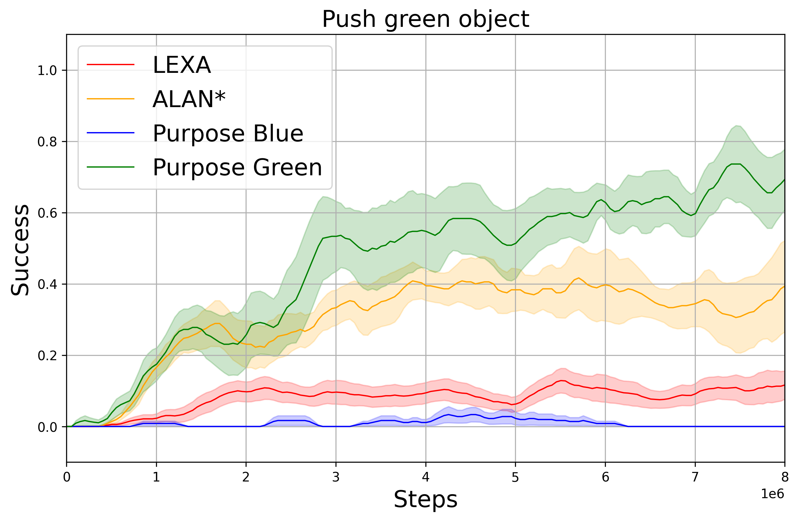
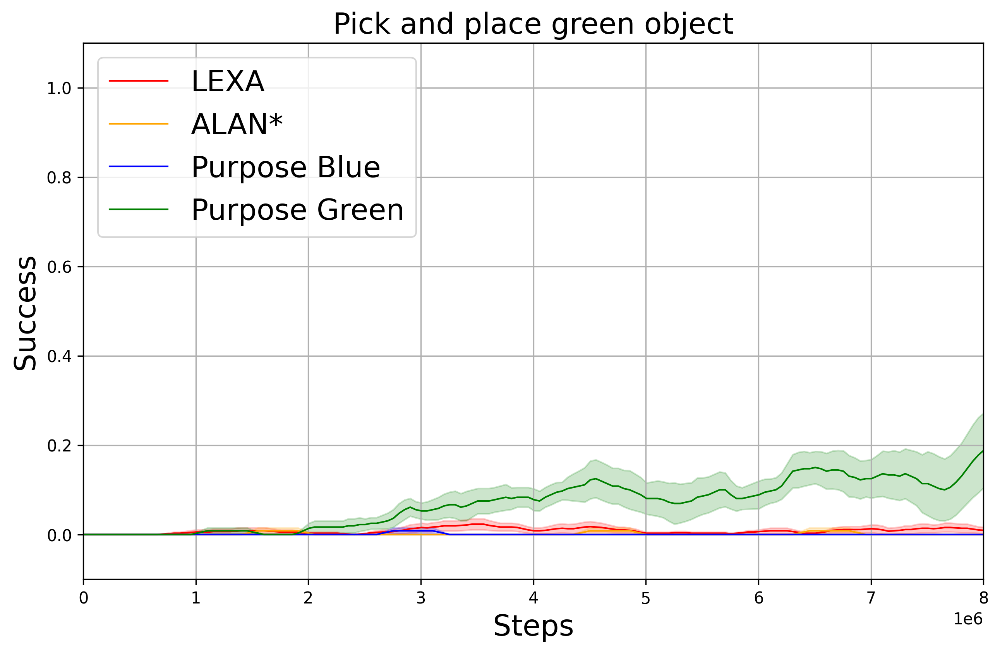

Open-Ended Learning (OEL) autonomous robots can acquire new skills and knowledge through direct interaction with their environment, relying on mechanisms such as intrinsic motivations and self-generated goals to guide learning processes. OEL robots are highly relevant for applications as they can autonomously leverage acquired knowledge to perform tasks beneficial to human users in unstructured environments, addressing challenges unforeseen at design time. However, OEL robots face a significant limitation: their openness may lead them to waste time learning information that is irrelevant to tasks desired by specific users. Here, we propose a solution called ‘Purpose-Directed Open-Ended Learning’ (POEL), based on the novel concept of ‘purpose’ introduced in previous work. A purpose specifies what users want the robot to achieve. The key insight of this work is that purpose can focus OEL on learning self-generated classes of tasks that, while unknown during autonomous learning (as typical in OEL), involve objects relevant to the purpose. This concept is operationalised in a novel robot architecture capable of receiving a human purpose through speech-to-text, analysing the scene to identify objects, and using a Large Language Model to reason about which objects are purpose-relevant. These objects are then used to bias OEL exploration towards their spatial proximity and to self-generate rewards that favour interactions with them. The solution is tested in a simulated scenario where a camera-arm-gripper robot interacts freely with purpose-related and distractor objects. For the first time, the results demonstrate the potential advantages of purpose-focused OEL over state-of-the-art OEL methods, enabling robots to handle unstructured environments while steering their learning toward knowledge acquisition relevant to users.
Method

- User Input: the user communicates the Purpose to the robot through speech, and this is converted to text via Speech-to-Text.
- Visual Interpretation: the visual module processes the simulated environment to identify objects and their locations.
- LLM Processing: the LLM receives the user’s Purpose and the visual description of the scenario from the visual module, i.e. the list of the detected objects. The LLM interprets the Purpose and determines which objects are relevant to achieving it, giving as output a subset of the objects detected in the scene. This list of objects biases the robot’s interactions to favour these objects, guiding the agent to focus on tasks relevant for the Purpose.
- Initialization: based on the LLM’s interpretation, the robotic arm’s initial position is set near a relevant object. This strategic initialization increases the likelihood of the agent interacting with objects pertinent to the user’s Purpose, enhancing learning efficiency and later task performance.
- Purpose Proximity and Lifting rewards: using the visual module’s ability to determine the position of the target objects, both observations coming from the environment and from imagined rollouts internal to LEXA are analysed by the Proximity and Lifting Purpose models and are assigned rewards. This enhances the interactions with Purpose-related objects and the learning of Purpose-relevant tasks.
Results
 